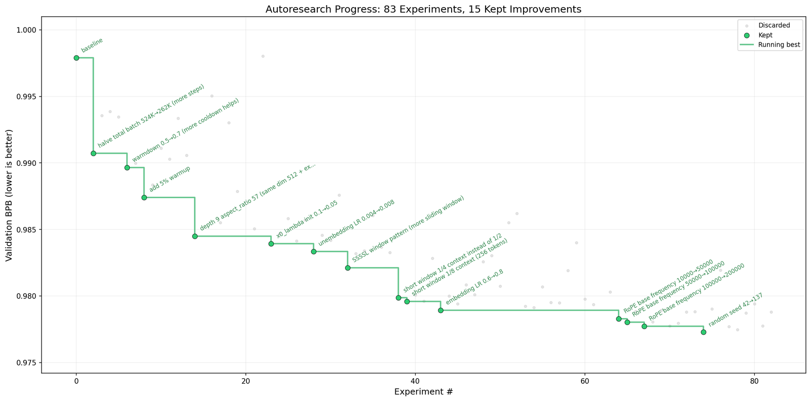
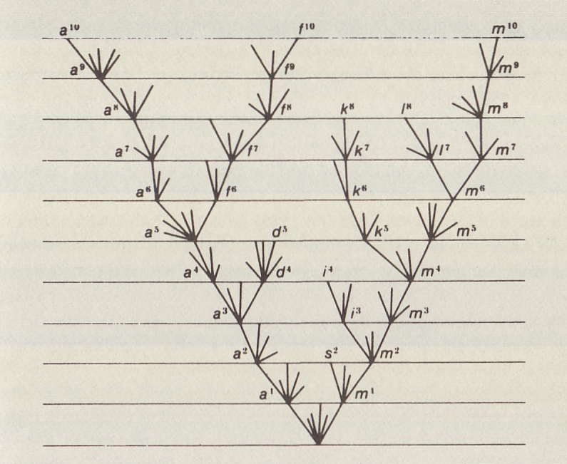

这场分享讲什么
⏱ 0:00–0:30一共 25 分钟,最后一章含提问时间。黄色 = 现场 demo。点任意一行跳到对应章节。
WHY RSI:为什么要让 AI 改进自己
⏱ 0:30–1:302026 年的领域全景
⏱ 1:30–2:30论文有多少、在哪儿
RSI 在进化什么
被进化的对象可以分成五层:越往上,改动越深、越贵、越难回滚。今天大多数工作集中在下面几层。
读法:从下往上。先把便宜的层榨干,再考虑上一层;权重永远最后动。改进机制本身也可以被进化(HGM 进化「怎么选亲本」,MemEvolve 进化「记忆系统架构」),但这更需要严格的门。
方法:从 autoresearch 到达尔文哥德尔机
⏱ 2:30–5:00最小的进化循环:autoresearch


下一步:达尔文哥德尔机(DGM)—— 先从达尔文讲起
autoresearch 只留一条线:变好就留,变差就撤。DGM 借的是达尔文进化论的做法 —— 先把几个词对上,后面就好懂了。
 达尔文档案 + 选择 + 变异
达尔文档案 + 选择 + 变异开放式探索,不只留第一名
哥德尔机(Schmidhuber 2003):先证明更好才改
不证明,直接实测;留一整个种群


哥德尔像:约 1925 年学生时代,公有领域,来自 Wikimedia Commons。「哥德尔机」这个名字来自他 1931 年的不完备定理 —— 一个系统可以谈论、改写它自己(自指)。


Demo 1 · Play:把 DGM 的进化逻辑跑一遍
⏱ 5:00–7:30再看 Play:同样的进化逻辑,放在一个电商搜索 agent 上
用户搜「apple 128gb」,起点版返回红富士苹果。Play 用 ShinkaEvolve(Sakana)做引擎,Claude 做 proposer,只改 search() 代码,模型权重不动。
| 进化逻辑 | DGM | Play |
|---|---|---|
| 档案 | 所有能跑的变体 | 最多 8 个版本,分 2 个岛 |
| 选亲本 | 分数高、子代少的优先 | 按 w = exp(score / T) 加权采样,T = 0.15:高分优先,但不独占 |
| 改什么 | agent 自己的代码 | 搜索 agent 的 search() 代码(不改 proposer 自己) |
| 提案依据 | 自己的评测日志 | 亲本代码 + 它做错的题 |
| 门 | benchmark 实测 | 31 公开 + 5 hold-out + 31 typo,综合分 = 0.7·公开 + 0.2·hold-out + 0.1·typo − 代码惩罚 |
| 晋升 | 放回档案 | 综合分 > 0 才入档,否则丢弃 |
- 档案和选亲本:柱子越长,被选中的概率越高,但低分的也有机会
- 提案:带着错题,AI 先写思路再写 diff
- 门:为什么要 hold-out 和 typo —— 硬记答案会在这两套上崩
- 一次被拒:把答案写进代码(泄漏),或者每题跑 20 个候选重排(花钱买分)
- 一次晋升:先识别意图、再抽属性、再检索,「apple 128gb」返回 iPhone;档案多了一个版本
AlphaEvolve
⏱ 7:30–8:30接着:AlphaEvolve —— 同样的达尔文循环,用来解一道题
DGM 进化的是 agent 自己;AlphaEvolve 进化的是一道题的解法程序(一个算法、一条调度规则),改的人(Gemini)自己不变。但骨架还是刚才那四个词:
| 达尔文 | DGM | AlphaEvolve |
|---|---|---|
| 变异 | agent 改自己的代码 | Gemini 改整个程序文件:Flash 出数量、Pro 出质量 |
| 选择 | 在 SWE-bench 上打分 | 评估级联:便宜的测试先筛,过了才进贵的 |
| 遗传 | 子代从亲本代码继续改 | 从数据库取父本 + 几个「灵感」程序,一起放进提示词 |
| 多样性 | 档案,不砍枝 | MAP-Elites 分格 + 岛屿种群:每一格只留该格最好的,不同岛各自进化 —— 留住「多种好」 |


一个例子:Google 数据中心的调度规则
要进化的是一个很短的打分函数:新任务来了,放到哪台机器上。人写好初始版本和评测,剩下交给循环。评测分三级,越往后越贵,必须逐级通过:
用历史数据回放。最便宜,先拿它来筛候选
换一批没参与进化的数据再测,防止只对历史数据有效
上线实测。最终持续回收约 0.7% 的全球算力,而且规则很短,人能读懂
云厂商现状:三家都在做「agent 自动变好」
⏱ 8:30–10:00三个场景:哪里的「验」越可信,哪里先落地
⏱ 10:00–17:00先看全貌:三个场景
共同前提:先有可信的评估,才谈得上自进化。点卡片跳到对应场景。
场景一 · Infra:用 coding agent 进化推理集群配置
同样是「跑、看、提、验、定」,放到运维里:agent 不是一上来就调参,而是先诊断,不在没救的地方浪费时间。

场景二 · Agent:飞书 —— 为可靠的企业级 RSI 构建数据基础
举个例子(示意):员工问「上周和某客户的会上,交付时间定的是哪天?」
会议纪要、群聊、文档里都提过交付时间,而且改过两次:先说 10 号,后来改成 15 号,最后定 18 号。
把「客户 A」「交付」「会议」「谁说的」「哪天说的」连成一张关系网,每条信息都带时间。
旧做法(RAG)搜到几段相似的文字拼答案,可能答成 10 号;用图谱能顺着时间找到最后一次确认的 18 号。
先筛掉明显不能用的答案,再拿新旧版本做「好 / 持平 / 差」对比;答错的样本归类原因:时间错乱、问题被改写走样、来源质量差……每一类对应一个改法。
例如规定「时间敏感的问题只能用提问时间之前的信息」,质量差的合成问题先改写;修好的数据和评估标准进入下一轮,agent 下次答得更准。
这个例子是按论文描述的机制编的示意,不是论文里的原始案例。

场景三 · Software:让一群 agent 自己写软件
Argus 原型:planner 写规格和验收测试 → 规格门禁(测试在空脚手架上必须全部失败)→ 团队在共享 git + 空数据库里自组织开发 → 双容器判分。最大跑到 128 个 worker、640 条验收全部通过。
- 拖动时间轴,看 agent 怎么读写共享表、分工怎么形成
- 看一次 rebase 冲突和它怎么被解决
- 最后看判分:640 条一条条变绿
限制与落地:先把「验」做好
⏱ 17:00–20:00五种假进步,和对应的门
| 假进步 | 长什么样 | 对策 |
|---|---|---|
| 过拟合 | 收益依赖任务顺序和运行方差;默认顺序本身就是隐藏的课程 | 多次运行 + 打乱顺序 + held-out |
| 花钱买分 | 进化学会多试几次、想更久,分数涨、成本涨得更多 | 预算匹配基线 + 成本进综合分 |
| 评估器漂移 | 评估器进了循环,会被一起拖着走,最后变成「永远说对」 | 评估器可以进化,但要有一个不进化的锚 |
| Reward hacking | 已经编目了 13 种模式;分数涨,真实质量不涨 | 独立验证器 + 泄漏审计 + 对抗审计 |
| 测试时扩展 | 预算一收紧,多花算力换来的分就消失 | 预算匹配基线:多花的算力要扣掉 |
落地顺序
golden set + 评估器。这是自进化最贵、也最值钱的前置资产(AgentCore Evaluations)
生产轨迹和在线评估分,作为进化信号(AgentCore Observability)
离线进化 + 门禁 + 人工审批后发布,可回滚(AgentCore Optimization)
总结:千篇「一律」—— RSI 里什么在变,什么不变
⏱ 20:00–25:00一张图:千篇「一律」
外圈在变:改什么、信号从哪来、门长什么样、规模、谁做决定、成本 —— 每个系统都不一样,所以论文「千篇」。
内圈不变:瓶颈在验证、评测要放在改不到的地方、涨分要拆账、从便宜的层开始、人定目标。
中心不变:跑 → 看 → 提 → 验 → 定。所以说「一律」。
什么在变
什么不变
五个例子放在一起
| 改什么 | 信号从哪来 | 门(Verify) | 人在哪 | |
|---|---|---|---|---|
| autoresearch | train.py | val_bpb(离线) | 指标固定,只许改一个文件 | 循环外:定指标 |
| Play | 搜索 harness 代码 | NDCG@5(离线) | hold-out + typo + 代码惩罚 | 循环外:定评测集 |
| 推理集群 | 集群配置 | 吞吐、延迟、稳定性(压测) | 金丝雀 + 风险清单 | 循环外:定风险清单 |
| 软件工厂 | 软件(下一步:工厂本身) | 验收测试(离线) | 规格门禁 + 独立判分 | 循环外:批准规格 |
| 飞书 | 数据底座和评估标准(知识图谱、数据质量) | 生产环境的真实使用记录 | 自动评估 + 错误归因,评估器本身也在校准 | 循环里:定标准、审样本、批改动 |
RSI for X:放到不同领域,快慢差别很大
和「AI for X」一样,RSI 也要落到具体领域。论文看了四个方向,共同的标准是:反复改一个外部产物(一个分子、一段代码、一份诊断)还不够,反馈必须变成 AI 系统自己持久的改动,并在后面的任务里复用。今天证据最强的是有边界的、组件级的改进;改进机制本身在进化的例子还很少。

靠什么反馈:代码和 agent 本身都能执行、打版本、回滚,测试结果直接。
代表:SWE-Exp 从成功和失败的修复里提炼经验;Self-Harness 改自己的 harness,过回归测试才留下;DGM 维护自改写 agent 的谱系。
还差:仓库测试只是用户意图、安全、可维护性的近似;基准、沙箱、选择规则仍由外部定。
靠什么反馈:实验结果或证伪,研究 agent 提假设 → 做实验 → 归因 → 留下验证过的改动。
代表:HypoForge 把评审意见和实验结果沉淀成可复用技能;DrugSAGE 跨任务迁移验证过的建模流程;SIA 连 scaffold、工具和权重都能改。
还差:评估器和晋升规则基本固定;只改进一个分子或方程,算不上 agent 自己变好了。
靠什么反馈:物理交互和因果反馈,选经验 → 执行策略 → 评估轨迹 → 更新策略、世界模型或技能库。
代表:POET 让环境和 agent 一起进化;Voyager 把成功行为变成技能库;World-VLA-Loop 交替改世界模型和策略。
还差:失败难归因(感知、规划、控制、硬件),真实环境难重置;多数还靠仿真和外部给的奖励。
靠什么反馈:专家、临床指南、诊断证据和长期的病人结局。
代表:Agent Hospital 的 MedAgent-Zero 从失败里提炼诊断规则;EvoClinician 按过程打分改取证方式;HealthFlow 留下验证过的安全措施和流程。
还差:证据多来自模拟或回顾性数据;改动必须可追溯、可撤回、持续监测,并经专家和机构批准。
规律和「三个场景」一章的排序一样:哪里的「验」越快、越可信、越能回滚,哪里的 RSI 就走得越快。